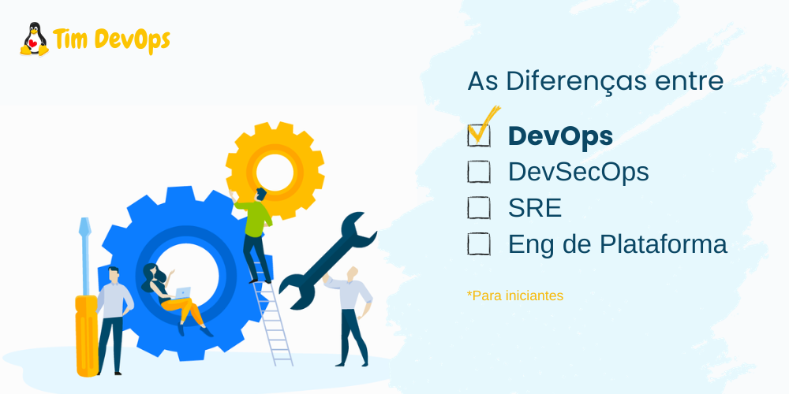
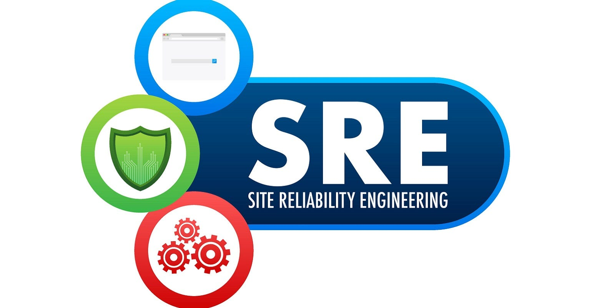

As Diferenças entre DevOps, DevSecOps, SRE e Engenheiro de Plataforma

Salve!
Hoje, vamos falar do universo da engenharia de software e explorar as nuances entre quatro papéis essenciais: DevOps, DevSecOps, SRE (Site Reliability Engineering) e Engenheiro de Plataforma. Embora essas funções sejam cruciais para o sucesso das operações de TI, é importante destacar que nem tudo é 100% certo no mundo dinâmico da tecnologia. Vamos ver um pouco essas diferenças.

DevOps: A Colaboração no Centro
O DevOps é como uma cola que une equipes de desenvolvimento e operações. Aqui estão alguns pontos-chave:
-
**Colaboração: **DevOps enfatiza a colaboração contínua entre equipes de desenvolvimento e operações para garantir entregas de software mais rápidas e confiáveis.
-
Automação: A automação de processos é uma parte central do DevOps, permitindo a entrega contínua e a implantação automatizada.
-
Cultura: É uma filosofia que promove uma cultura de aprendizado contínuo e melhoria.

DevSecOps: Segurança em Primeiro Lugar
O DevSecOps leva o conceito do DevOps um passo adiante, incorporando segurança desde o início: Isso não quer dizer que não devem trabalhar juntos um DevOps e DevSecOps, na verdade os dois se complementam.
-
Segurança Integrada: A segurança é integrada ao ciclo de vida de desenvolvimento, não como uma reflexão tardia.
-
Testes de Segurança: Ferramentas de automação ajudam a identificar vulnerabilidades e problemas de segurança.
-
**Responsabilidade Compartilhada: **Todos na equipe são responsáveis pela segurança.

SRE (Site Reliability Engineering): Mantendo as Coisas Funcionando
SRE é sobre garantir que sistemas e aplicativos sejam confiáveis e escaláveis:
-
Confiabilidade: O foco principal é manter sistemas altamente confiáveis, minimizando interrupções.
-
Engenharia: Usa princípios de engenharia de software para resolver problemas operacionais.
-
**SLIs, SLOs, SLAs: **Mede a confiabilidade usando indicadores de serviço (SLIs), objetivos de serviço (SLOs) e acordos de nível de serviço (SLAs).

Engenheiro de Plataforma: Habilitando a Infraestrutura
Os Engenheiros de Plataforma são responsáveis pela infraestrutura que suporta aplicativos:
-
**Infraestrutura como Código (IaC): **Desenvolve e mantém a infraestrutura usando código.
-
Orquestração de Contêineres: Gerencia contêineres e orquestração para implantação eficiente.
-
Escalabilidade: Garante que a infraestrutura possa escalar conforme necessário.
Aqui está uma tabela rápida de comparação:
Papel | Enfoque Principal | Ferramentas Comuns
---------------|--------------------------------|-------------------------------
DevOps | Colaboração, Automação | Jenkins, Ansible, Docker
DevSecOps | Segurança Integrada | OWASP ZAP, Nessus, Vault
SRE | Confiabilidade, Engenharia | Prometheus, Grafana, Kubernetes
Platform Eng | Infraestrutura, Escalabilidade | Terraform, Kubernetes, Docker
Lembre-se de que, no mundo real, as fronteiras entre esses papéis podem ser borradas, e as organizações adaptam esses conceitos às suas necessidades específicas. O importante é manter o foco na colaboração, na automação e na segurança, independentemente do título que você use.
Neste dinâmico ecossistema, a adaptação é a chave, e aprender continuamente é essencial. Espero que esta exploração simplista tenha ajudado a compreender melhor as diferenças entre DevOps, DevSecOps, SRE e Engenheiro de Plataforma.
Se você tiver alguma dúvida ou quiser compartilhar suas experiências, sinta-se à vontade para comentar abaixo. Juntos, continuamos a explorar e evoluir no emocionante mundo da tecnologia!